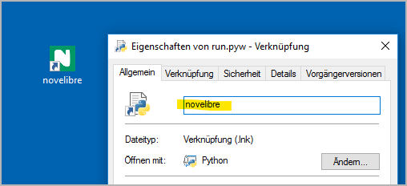

Installation unter Windows
Wichtig
novelibre erhalten Sie als Quellcode in der Programmiersprache Python. Um das Programm ausführen zu können, muss Python auf Ihrem PC installiert sein. Python kann über verschiede Wege kostenlos bezogen werden. Ich empfehle auf jeden Fall die Website der Entwickler:
Python wird laufend weiterentwickelt und verbessert. Sie brauchen Ihre Python-Installation jedoch nicht zu aktualisieren, so lange novelibre damit funktioniert.
Die eigentliche Installation von novelibre ist einfach und unkompliziert. Dabei legt das Installationsprogramm automatisch ein Installationsverzeichnis an, kopiert alles Nötige hinein, und erzeugt eine für den jeweiligen Rechner angepasste Startdatei namens run.pyw, die man aufrufen muss, um novelibre auszuführen.
Die notwendige Handarbeit besteht darin, diese Startdatei mit dem Desktop zu verknüpfen und, falls gewünscht, der Verknüpfung ein Programmsymbol zuzuweisen. Außerdem zeige ich, wie man es unter Windows einrichtet, dass die novelibre-Projektdateien ein eigenes Programmsysmbol erhalten, und dass beim Doppelklicken darauf die Programmanwendung gestartet wird.
Mit meinen einfachen Mitteln kann ich das leider nicht automatisieren, ohne Probleme mit den Sicherheitsmechanismen des Betriebssystems zu bekommen.
Das Programm installieren
- Schritt 1
Starten Sie entweder die heruntergeladene Datei novelibre_vx.x.x.pyz durch Doppelklick,

oder führen Sie
python novelibre_vx.x.x.pyzauf der Kommandozeile aus.
„x.x.x“ ist dabei die Versionsnummer.
In beiden Fällen sollte eine Erfolgsmeldung erscheinen.
Wichtig
Viele Webbrowser erkennen den Download als ausführbare Datei und bieten an, sie direkt zu öffnen. Damit können Sie die Installation ganz bequem starten.

Abhängig von Ihren Sicherheitseinstellungen kann es allerdings auch passieren, dass Ihr Browser den Download der ausführbaren Datei zunächst verweigert. In diesem Fall ist Ihre Bestätigung oder eine zusätzliche Handlung erforderlich.
Falls das nicht geht, können Sie auf den Download der zip-Datei ausweichen. Entpacken Sie dann diese und führen Sie
setup.pydurch Doppelklick aus.
novelibre auf den Desktop bringen
- Schritt 2
Öffnen Sie das Installationsverzeichnis.
- Schritt 3
Ziehen Sie run.pyw bei gedrückter
Alt-Taste auf den Desktop. Das erzeugt eine Programmverknüpfung, um novelibre vom Windows-Desktop aufzurufen. Nun können Sie .novx-Dateien auch auf diese Verknüpfung ziehen.- Schritt 4
Wahlweise können Sie das „Python“-Programmsymbol durch das novelibre-Logo ersetzen, das Sie im Unterverzeichnis icons des Installationsordners finden.
Dazu klicken Sie mit der rechten Maustaste auf die Programmverknüpfung und öffnen den Eigenschaften-Dialog. Wählen Sie den Verknüpfung-Karteireiter und klicken Sie auf Anderes Symbol… (1). Im Symbolauswahldialog klicken Sie auf Durchsuchen… (2). Das öffnet einen Dateiauswahldialog. Gehen Sie auf
<home>\.novx\iconsund doppelklicken Sie das „N“-Logo (3).- Schritt 5
Um die Programmverknüpfung zu novelibre umzubenennen, klicken Sie mit der rechten Maustaste darauf und öffnen den Eigenschaften-Dialog. Im ersten Karteireiter ersetzen Sie „Verknüpfung mit run.pyw“ durch „novelibre“.

.novx-Dateien novelibre zuweisen
- Schritt 6
Wahlweise können Sie die Dateinamenserweiterung .novx der novelibre-Anwendung zuweisen. Dann werden Projektdateien im Explorer mit dem novelibre-Symbol angezeigt und können durch Doppelklick mit novelibre geöffnet werden. Außerdem können Sie .novx-Dateien mit Ihrem Webbrowser betrachten, wenn Sie ein novx.css Stylesheet im selben Verzeichnis haben.
Doppelklicken Sie auf das Skript add_novelibre.reg. Windows wird eine Warnung ausgeben und Sie um Bestätigung bitten. Falls Ihnen Zweifel kommen, können Sie sich die Datei add_novelibre.reg in einem Texteditor ansehen, oder einen Experten Ihres Vertrauens hinzuziehen.

Hinweis
Sie können das rückgängig machen, indem Sie das Skript remove_novelibre.reg ausführen. Das entfernt alle Einträge zu novelibre aus der Windows-Registry, wobei die Anwendung erhalten bleibt.
Um die Applikation mitsamt ihren Werkzeugen, Plugins und Konfigurationsdaten zu deinstallieren, löschen Sie einfach das Verzeichnis
<home>\.novx, nachdem Sie das Skript remove_novelibre.reg ausgeführt haben.
Wichtig
Wenn Sie novelibre unter Windows mit Doppelklick auf die .novx-Datei starten, ruft das unter der Motorhaube die aktuell installierte Version des Python-Interpreters auf.
Falls Sie zu einem späteren Zeitpunkt Ihre Python-Installation auf eine andere Version updaten, sollten Sie novelibre erneut installieren und danach add_novelibre.reg ausführen. Andernfalls wird Windows die neue Python-Version nicht finden, und Sie können .novx-Dateien nicht per Doppelklick öffnen.
Bitte behalten Sie das im Hinterkopf, auch wenn es reichlich unwahrscheinlich ist, dass novelibre in naher Zukunft ein Python-Update benötigt.
Das Programm oder ein Plugin aktualisieren
Führen Sie einfach den Schritt 1 wie oben beschrieben aus. Sollten weitere Handlungen nötig sein, erhalten Sie eine Meldung vom Setup-Skript.